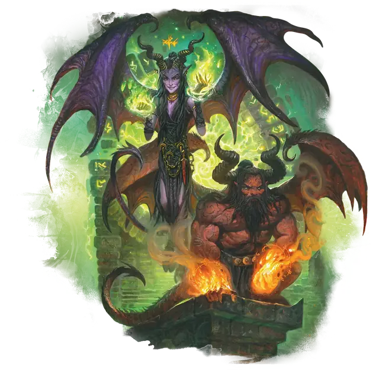

Камбион
Cambion
Среднее Исчадие, Нейтральное Злое

Класс Защиты 19 Инициатива +4 (14)
Хиты 105 (14к8 + 42)
Скорость 30 футов, Полёта 60 футов
| мод | спас | ||
|---|---|---|---|
| СИЛ | 18 | +4 | +7 |
| ЛОВ | 18 | +4 | +4 |
| ТЕЛ | 16 | +3 | +6 |
| мод | спас | ||
|---|---|---|---|
| ИНТ | 14 | +2 | +5 |
| МДР | 12 | +1 | +1 |
| ХАР | 16 | +3 | +6 |
Сопротивление урону Огонь, Холод, Электричество, Яд
Иммунитеты Отравленный
Чувства Тёмное зрение 120 футов, пассивное Восприятие 14
Языки Общий, Бездны, Инфернальный
Опасность 5 (1 800 опыта; БВ +3)
Действия
Мультиатака. Камбион совершает две атаки Когтями или Огненным лучом в любой комбинации.
Когти. Бросок рукопашной атаки: +7, досягаемость 5 фт. Попадание: 8 (1к8 + 4) Рубящего урона плюс 7 (2к6) урона Огнём.
Огненный луч. Бросок дальнобойной атаки: +7, дистанция 120 фт. Попадание: 13 (3к6 + 3) урона Огнём.
Сотворение заклинаний. Камбион сотворяет одно из следующих заклинаний, не нуждаясь в Материальных компонентах (заклинательная характеристика — Харизма, Сл спасброска заклинаний 14):
2/день каждое: Обнаружение магии, Приказ, версия 3-го уровня, Смена обличья
1/день каждое: Планарный переход, Подчинение личности, версия 8-го уровня
Бонус мастерства +3
Среда обитания Любая
Сокровища Реликварные
Камбион
Смертный, наделённый силой Исчадий
Камбионы — это падшие смертные, развращённые влиянием Исчадий или одержимые коварными силами. В отличие от своих дальних родственников — тифлингов, обладающих свободой воли, — эти существа либо изначально связаны с чёрной магией Нижних планов, либо были преобразованы ею.
Большинство камбионов служат враждебным силам — источнику их мощи, другие же стремятся обрести могущество своих творцов и овладеть собственными потусторонними способностями.
Самый знаменитый из них — злодей Юз, ставший полубогом и правителем зловещего государства, угрожающего благополучию Свободного города Грейхок на Оэрте.
Смертные становятся камбионами различными путями. Совершите бросок по таблице «Происхождение камбиона» для вдохновения или выберите сами источник силы бестии.
Происхождение камбиона
| 1к6 | Камбион получил свою силу после... |
| 1 | Того, как стал одержим духом Исчадий. |
| 2 | Воскрешения злым магом. |
| 3 | Длительного пребывания на Нижнем плане. |
| 4 | Заключения сделки с Исчадием. |
| 5 | Получения божественного проклятия. |
| 6 | Участия в нечестивых ритуалах. |